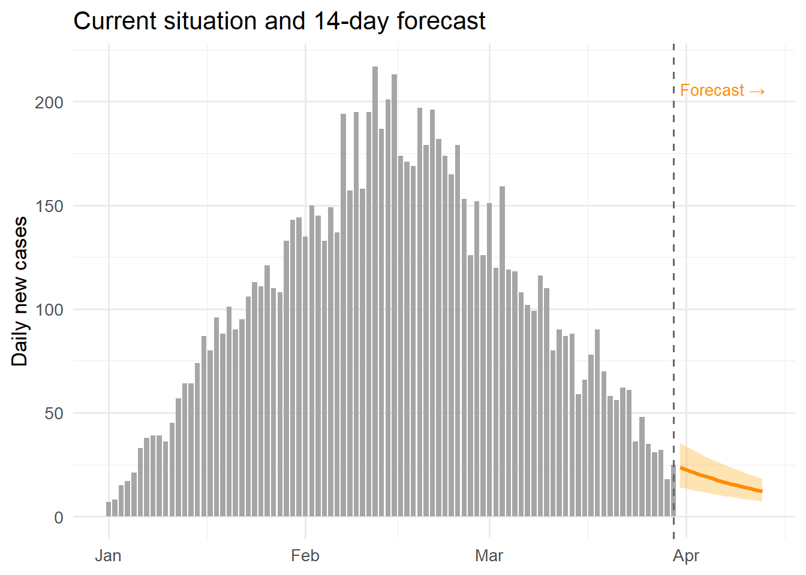
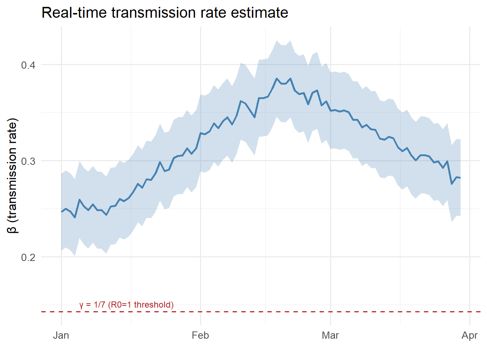

library(ggplot2)
library(dplyr)
set.seed(2024)
n <- 90
dates <- seq(as.Date("2024-01-01"), by = "day", length.out = n)
# Simulate observations
obs_vec <- rpois(n, lambda = c(seq(5, 200, length.out = 45),
seq(200, 20, length.out = 45)))
# Simulated EnKF beta estimates
beta_est <- c(rep(0.25, 10),
seq(0.25, 0.38, length.out = 40),
seq(0.38, 0.28, length.out = 40)) +
rnorm(n, 0, 0.005)
beta_est <- pmax(0.1, beta_est)
df <- data.frame(
date = dates,
new_cases = obs_vec,
beta = beta_est,
beta_lo = beta_est - 0.04,
beta_hi = beta_est + 0.04
)
# 14-day forecast from last observed day
last_date <- max(dates)
fcst_days <- 14
fcst <- data.frame(
date = last_date + seq_len(fcst_days),
median = obs_vec[n] * 0.95^seq_len(fcst_days),
lo = obs_vec[n] * 0.95^seq_len(fcst_days) * 0.6,
hi = obs_vec[n] * 0.95^seq_len(fcst_days) * 1.5
)Building a Real-Time Dashboard with Streamlit
Turning EnKF outputs and forecasts into an interactive web application. Post 8 in the Building Digital Twin Systems series.
digital twin
dashboard
Streamlit
Python
visualisation
1 The final layer: making the twin visible
The digital twin stack built across Posts 1–7 now runs entirely on AWS:
- A FastAPI service exposes the model as an API
- An EnKF runner updates the model state nightly
- TimescaleDB stores observations, state estimates, and forecasts
All of this is invisible to the end user — an epidemiologist, a public health official, or a policy maker. They need a dashboard: a live web page that turns database rows into interpretable charts, and that lets them explore scenarios without writing code.
Streamlit (1) is a Python library that converts a Python script into a web application with almost no extra code. A Streamlit app:
- Runs as a Python script — no HTML, CSS, or JavaScript required
- Re-executes the script on every user interaction
- Deploys as a Docker container alongside the rest of the stack
For R users, Shiny (2) fills the same role. The concepts in this post transfer directly to Shiny.
2 What the dashboard should show
An epidemic digital twin dashboard has four views:
- Current state — today’s estimated \(S\), \(E\), \(I\), \(R\), \(\beta\), and their uncertainty
- Trend — how the state estimate has evolved over the past 30–90 days
- Forecast — 14-day projections with uncertainty intervals
- Scenario comparison — what happens under different intervention assumptions
3 The complete Streamlit application
The code below is production-ready. It connects to TimescaleDB, caches queries, and renders interactive Plotly charts. In this post we show the full code with eval: false and then reproduce the equivalent charts in R to illustrate the output.
3.1 Application skeleton
# dashboard/app.py
import streamlit as st
import pandas as pd
import plotly.graph_objects as go
from plotly.subplots import make_subplots
import psycopg2
import os
from datetime import datetime, timedelta
st.set_page_config(
page_title="Epidemic Digital Twin",
layout="wide",
initial_sidebar_state="expanded"
)3.2 Database connection with caching
@st.cache_resource
def get_connection():
"""Cached database connection — reused across reruns."""
return psycopg2.connect(
host = os.environ["DB_HOST"],
dbname = os.environ["DB_NAME"],
user = os.environ["DB_USER"],
password = os.environ["DB_PASSWORD"],
)
@st.cache_data(ttl=300) # refresh every 5 minutes
def load_observations(location: str, days: int = 90) -> pd.DataFrame:
conn = get_connection()
return pd.read_sql("""
SELECT time, new_cases
FROM observations
WHERE location_id = %s
AND time >= NOW() - INTERVAL '%s days'
ORDER BY time
""", conn, params=(location, days))
@st.cache_data(ttl=300)
def load_model_states(location: str, days: int = 90) -> pd.DataFrame:
conn = get_connection()
return pd.read_sql("""
SELECT time, beta_median, beta_lo95, beta_hi95,
I_median
FROM model_states
WHERE location_id = %s
AND time >= NOW() - INTERVAL '%s days'
ORDER BY time
""", conn, params=(location, days))
@st.cache_data(ttl=300)
def load_forecasts(location: str) -> pd.DataFrame:
conn = get_connection()
return pd.read_sql("""
SELECT target_time, horizon_days,
cases_median, cases_lo95, cases_hi95
FROM forecasts
WHERE location_id = %s
AND issued_at = (
SELECT MAX(issued_at) FROM forecasts
WHERE location_id = %s
)
ORDER BY target_time
""", conn, params=(location, location))3.4 Current state panel
obs = load_observations(location, lookback)
states = load_model_states(location, lookback)
fcst = load_forecasts(location)
# Key metrics row
latest = states.iloc[-1]
col1, col2, col3 = st.columns(3)
col1.metric(
label="Transmission rate β",
value=f"{latest['beta_median']:.3f}",
delta=f"{latest['beta_median'] - states.iloc[-8]['beta_median']:.3f} (7d)"
)
col2.metric(
label="Estimated infectious (I)",
value=f"{latest['I_median']:,.0f}"
)
col3.metric(
label="Latest daily cases",
value=f"{obs.iloc[-1]['new_cases']:,.0f}"
)3.5 Time-series chart
fig = make_subplots(
rows=2, cols=1, shared_xaxes=True,
subplot_titles=("Daily cases + 14-day forecast",
"Estimated transmission rate β"),
vertical_spacing=0.1
)
# Row 1: observations + forecast
fig.add_trace(go.Bar(
x=obs["time"], y=obs["new_cases"],
name="Observed cases", marker_color="rgba(100,100,100,0.6)"
), row=1, col=1)
fig.add_trace(go.Scatter(
x=fcst["target_time"],
y=fcst["cases_median"],
mode="lines", name="Forecast",
line=dict(color="darkorange", width=2)
), row=1, col=1)
fig.add_trace(go.Scatter(
x=pd.concat([fcst["target_time"], fcst["target_time"][::-1]]),
y=pd.concat([fcst["cases_hi95"], fcst["cases_lo95"][::-1]]),
fill="toself", fillcolor="rgba(255,165,0,0.2)",
line=dict(color="rgba(255,255,255,0)"),
name="95% CI"
), row=1, col=1)
# Row 2: beta estimate
fig.add_trace(go.Scatter(
x=states["time"], y=states["beta_median"],
mode="lines", name="β estimate",
line=dict(color="steelblue", width=2)
), row=2, col=1)
fig.add_trace(go.Scatter(
x=pd.concat([states["time"], states["time"][::-1]]),
y=pd.concat([states["beta_hi95"], states["beta_lo95"][::-1]]),
fill="toself", fillcolor="rgba(70,130,180,0.2)",
line=dict(color="rgba(255,255,255,0)"),
showlegend=False
), row=2, col=1)
fig.update_layout(height=600, template="plotly_white",
legend=dict(orientation="h", y=1.05))
st.plotly_chart(fig, use_container_width=True)3.6 Scenario comparison widget
st.subheader("Scenario comparison")
col_a, col_b = st.columns(2)
with col_a:
beta_scenario = st.slider(
"Intervention: reduce β by (%)",
min_value=0, max_value=60, value=30, step=5
)
# Run surrogate model for the scenario (from Post 5)
# In production: call the surrogate emulator, not the full EnKF
scenario_beta = latest["beta_median"] * (1 - beta_scenario / 100)
st.info(
f"Under a {beta_scenario}% transmission reduction, "
f"β drops from {latest['beta_median']:.3f} to {scenario_beta:.3f}. "
f"The surrogate model projects peak incidence in approximately "
f"{int(7 / (scenario_beta - 1/7 + 0.001))} days."
)4 Running the Streamlit app
4.1 Locally
pip install streamlit plotly psycopg2-binary pandas
streamlit run dashboard/app.pyThe browser opens automatically at http://localhost:8501.
4.2 In Docker
# dashboard/Dockerfile
FROM python:3.12-slim
WORKDIR /app
COPY requirements.txt .
RUN pip install --no-cache-dir -r requirements.txt
COPY app.py .
EXPOSE 8501
CMD ["streamlit", "run", "app.py",
"--server.port=8501",
"--server.address=0.0.0.0",
"--server.headless=true"]Add to docker-compose.yml:
dashboard:
build: ./dashboard
ports:
- "8501:8501"
environment:
- DB_HOST=db
- DB_NAME=dtdb
- DB_USER=dtuser
- DB_PASSWORD=${DB_PASSWORD}
depends_on:
db:
condition: service_healthy
restart: unless-stoppedThe full stack now starts with a single command:
docker compose up --build- API:
http://localhost:8000/docs - Dashboard:
http://localhost:8501 - Database:
localhost:5432
5 Reproducing the dashboard charts in R
The charts below show what the Streamlit dashboard would display, implemented in R for readers who prefer that environment. The same data structures from Post 6 are reused.
ggplot() +
geom_col(data = df, aes(x = date, y = new_cases),
fill = "grey65", width = 0.8) +
geom_ribbon(data = fcst, aes(x = date, ymin = lo, ymax = hi),
fill = "orange", alpha = 0.3) +
geom_line(data = fcst, aes(x = date, y = median),
colour = "darkorange", linewidth = 1.2) +
geom_vline(xintercept = last_date, linetype = "dashed",
colour = "grey40") +
annotate("text", x = last_date + 1, y = max(obs_vec) * 0.95,
label = "Forecast →", hjust = 0, size = 3.5,
colour = "darkorange") +
labs(x = NULL, y = "Daily new cases",
title = "Current situation and 14-day forecast") +
theme_minimal(base_size = 13)
ggplot(df, aes(x = date)) +
geom_ribbon(aes(ymin = beta_lo, ymax = beta_hi),
fill = "steelblue", alpha = 0.25) +
geom_line(aes(y = beta), colour = "steelblue", linewidth = 1) +
geom_hline(yintercept = 1/7, linetype = "dashed",
colour = "firebrick", linewidth = 0.7) +
annotate("text", x = dates[5], y = 1/7 + 0.008,
label = "γ = 1/7 (R0=1 threshold)",
hjust = 0, size = 3.2, colour = "firebrick") +
labs(x = NULL, y = "β (transmission rate)",
title = "Real-time transmission rate estimate") +
theme_minimal(base_size = 13)
6 The complete series: what you have built
Posts 1–8 have taken you from a research function to a full digital twin product:
| Post | Topic | Key skill |
|---|---|---|
| 1 | Production code | Testing, packaging |
| 2 | REST API | FastAPI, Pydantic |
| 3 | Docker | Containerisation |
| 4 | EnKF | Real-time state estimation |
| 5 | GP surrogate | Fast emulation |
| 6 | TimescaleDB | Time-series storage |
| 7 | AWS deployment | Cloud infrastructure |
| 8 | Streamlit | Interactive dashboards |
The result is a system that ingests daily surveillance data, continuously updates its internal model state, generates short-term forecasts, and displays everything in a live web interface — the defining behaviour of an operational epidemic digital twin.
7 References
1.
Streamlit Inc. Streamlit: The fastest way to build and share data apps [Internet]. 2019. Available from: https://streamlit.io
2.
Chang W, Cheng J, Allaire J, Sievert C, Schloerke B, Xie Y, et al. Shiny: Web application framework for R [Internet]. 2023. Available from: https://CRAN.R-project.org/package=shiny